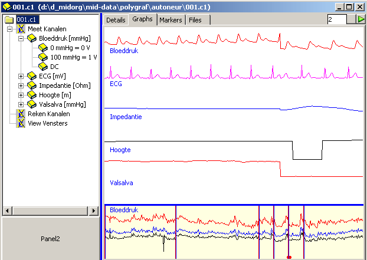
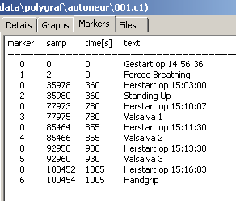
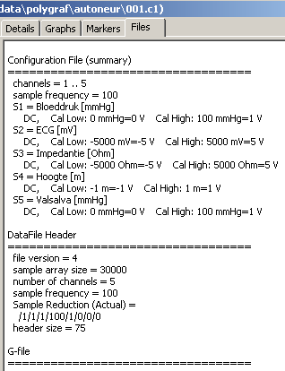

november 2005
Time Series Viewer
This module is intended as a viewer (and maybe later on as an graphical analyzer) for time series of different programs. At this moment the following file formats are recognozed: Spike2-CFS and Midac. Plans are there to add Spike2-SMR, Labview, Matlab, NIRS.
The first goal is to view different time series as easy as possible.
Below is a recording with Midac. On the left is a treeview, at this moment the tree has not much information, but it's a basic hierarchical structure which will be of great value when complex calculations are implemented.
On the right are a number of tabs, showing the contents of all related files in a different manner.

The graph-tab shows in the top window all the signals with auto-scaling. The bottom window is just a nice representation of the timebase.
In the timebase, one selected signal (select through RM-menu) is shown over the complete recording period. Also shown are the markers, red vertical lines for the system markers, blue vertical lines for the user markers. The selected signal in the timebase window is usually so hard compressed (low pass filtered), that you can not recognize it. Therefor we display not only the mean of the signal (blue curve), but alsothe maximum (red line) and the minimum (black line). If you're familiar with the signals and know what happened during recording, this timebase is a very convenient way to locate certain events. The small red line at the bottom of the timebase indicates the start and duration of the signals in the top window.
Clicking in the timebase window, will position the top window signals.

